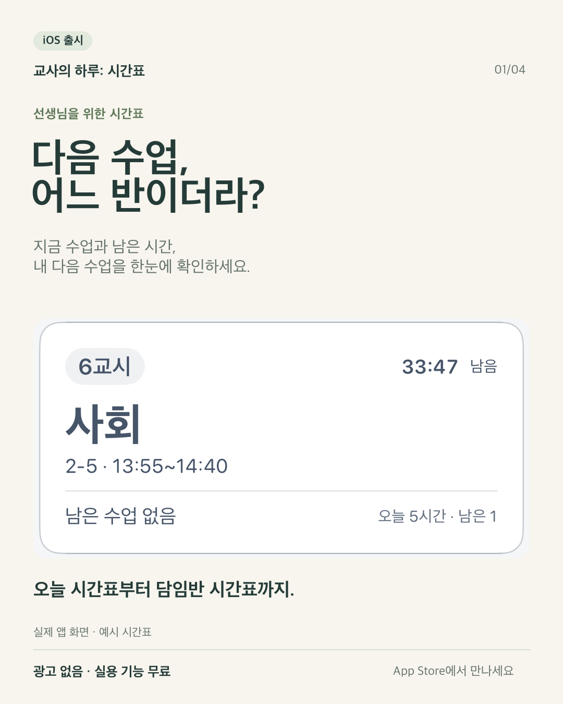
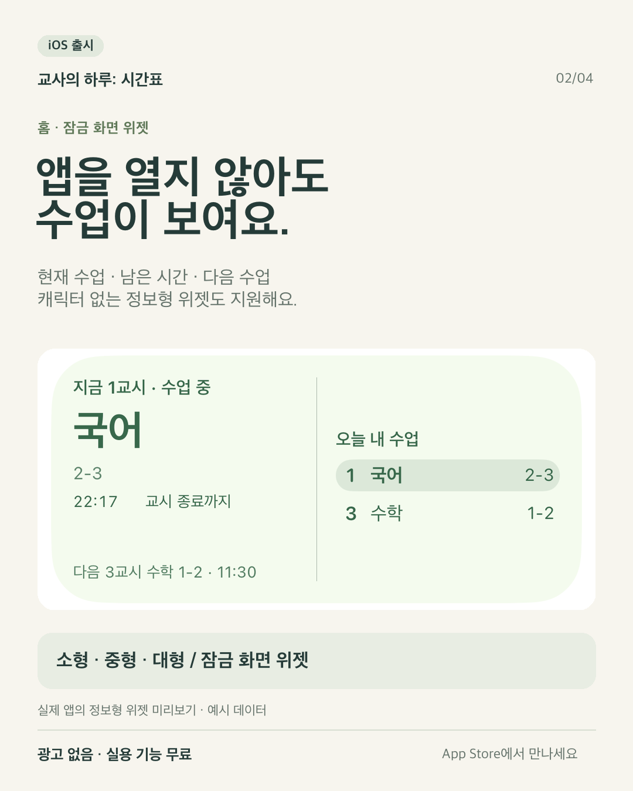
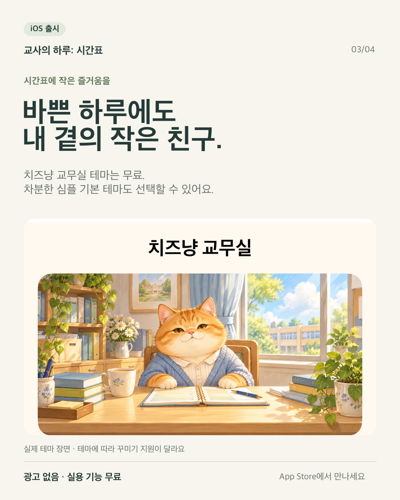
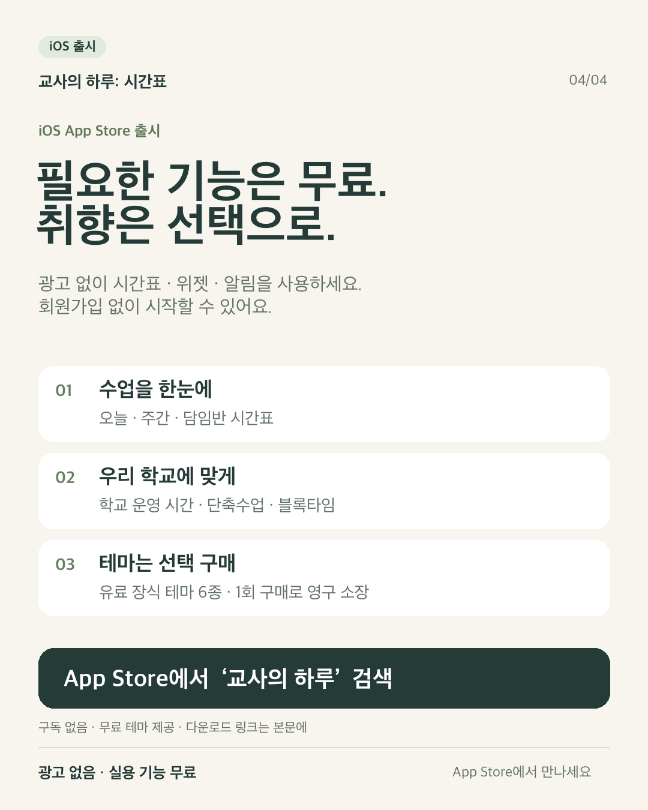

iOS App Store 출시 · 2026-10-31 자료
교사의 하루: 시간표
홍보 자료
선생님을 위한 시간표·위젯 앱. 이 페이지의 소개글과 이미지 링크는 로그인 없이 열 수 있습니다.
홍보 카드 4장
이미지를 누르면 원본 PNG가 열립니다. 01 → 04 순서로 사용할 수 있습니다.




앱 사실과 홍보 시 참고사항
교사의 하루: 시간표 — 홍보 자료 확인 날짜: 2026-10-31 / iOS 공개 버전: 1.0.4 App Store: https://apps.apple.com/kr/app/id6821646464 교사용 iOS 시간표 앱입니다. 광고·회원가입 없이 실용 기능을 무료로 제공합니다. 오늘·주간·담임반 시간표, 현재 수업·남은 시간·다음 수업, 홈·잠금 화면 위젯, 정보형 위젯, 수업 알림, 수업 메모, 날짜별 변경, 이미지 공유, 학교 운영 시간·단축수업·블록타임을 지원합니다. 수동 입력, 컴시간 공개 시간표, 개인 나이스 인증키로 학급 시간표를 조회할 수 있습니다. 외부 서비스와 공식 제휴한 앱은 아닙니다. 제공 여부·반영 시점은 제공처에 따릅니다. 무료 테마도 있습니다. 치즈냥 교무실은 무료이며 전용 소품 꾸미기는 지원하지 않습니다. 유료 장식 테마 6종은 선택형 1회 구매·영구 소장이고 구독은 없습니다. 실제 가격은 스토어 결제 화면 기준입니다. 실시간 현황은 앱이 닫혀 있는 동안 다음 교시로 자동 전환되지 않습니다. 기기 간 기록 동기화는 없습니다. Android 정식 출시 완료라고 소개하지 마세요. 이벤트 코드는 현재 상태·남은 수량을 검증하지 않아 이 자료에서 제외합니다. 다운로드 수·사용 후기·공식 제휴·확인되지 않은 기능을 만들어 쓰지 마세요. 이미지: 실제 iOS 앱의 예시 화면을 비율 유지 확대하여 구성했습니다. 01~04 순서, 각 1080×1350. 텍스트 초안과 그록 전달 요청: posts.txt
게시글 초안
인스타그램·스레드용 출시 소개 “다음 수업, 어느 반이더라?” 선생님이 자주 확인하는 정보를 한곳에 모았습니다. 교사의 하루: 시간표가 iOS App Store에 출시됐어요. • 지금 수업과 남은 시간, 내 다음 수업 확인 • 오늘·주간·담임반 시간표 • 홈·잠금 화면 위젯과 수업 알림 • 학교 운영 시간·단축수업·블록타임 설정 • 수업 메모와 시간표 이미지 공유 차분한 심플 기본부터 치즈냥 교무실까지, 무료 테마도 골라 보세요. 광고·회원가입 없이 실용 기능은 모두 무료입니다. 유료 장식 테마는 원할 때 한 번 구매해 영구 소장하는 방식이고, 구독은 없어요. App Store에서 ‘교사의 하루’를 검색하거나 아래 링크에서 만나세요. https://apps.apple.com/kr/app/id6821646464 써 보시고 수업 중 어떤 점이 편했는지, 어떤 점이 더 필요했는지 알려 주세요. #교사의하루 #교사시간표 #교사앱 #교사스타그램 #아이폰위젯 #시간표앱 --- X용 짧은 글 “다음 수업 어느 반이지?” 교사를 위한 ‘교사의 하루: 시간표’를 iOS에 출시했어요. 오늘·담임반 시간표, 홈·잠금 위젯, 수업 알림까지. 광고 없이 실용 기능은 무료이고, 치즈냥 무료 테마도 있어요. https://apps.apple.com/kr/app/id6821646464 --- 교사 커뮤니티용 제목: [앱 소개] 광고 없이 무료로 쓰는 교사 시간표·위젯 앱을 만들었습니다 안녕하세요. 교사를 위한 iOS 앱 ‘교사의 하루: 시간표’를 만들었습니다. 현재 수업과 남은 시간, 다음 수업을 확인하고 내 시간표와 담임반 시간표를 함께 볼 수 있습니다. 홈·잠금 화면 위젯, 수업 알림, 단축수업·블록타임 설정도 제공합니다. 시간표·위젯·알림 등 실용 기능은 광고 없이 무료이며 회원가입이 필요 없습니다. 일부 장식 테마만 선택 구매입니다. 학교 시간표를 직접 입력하거나 컴시간 공개 시간표·개인 나이스 인증키로 조회할 수 있습니다. 외부 시간표는 학교의 공개 여부와 제공처 상황에 따라 이용이 달라집니다. 아이폰 App Store: https://apps.apple.com/kr/app/id6821646464 사용하시면서 필요한 점이나 불편한 점을 알려 주시면 개선에 참고하겠습니다. --- 그록에 넘길 요청문 첨부한 홍보 카드 4장과 아래 앱 사실을 바탕으로 X 게시글 첫 문장 5개와 짧은 게시글 3개를 제안해줘. 한국 교사가 자연스럽게 읽는 말투로 쓰고 과장·가짜 사용 후기·다운로드 수·공식 제휴·미확인 기능을 만들지 마. 게시하지 말고 초안만 작성해줘. 앱 이름: 교사의 하루: 시간표 출시 플랫폼: iOS. Android 출시 완료라고 쓰지 말 것. 다운로드: https://apps.apple.com/kr/app/id6821646464 현재 공개 확인 버전: 1.0.4 (2026-10-31 확인) 핵심: 오늘·주간·담임반 시간표, 현재/다음 수업, 남은 시간, 홈·잠금 위젯, 알림, 수업 메모, 단축수업·블록타임, 시간표 이미지 공유. 가격 구조: 광고·회원가입 없이 실용 기능 무료. 무료 캐릭터 테마도 제공. 유료 장식 테마 6종은 선택형 1회 구매·영구 소장, 구독 없음. 제한: 학교 조회 제공 여부·반영 시점은 외부 서비스에 따름. 실시간 자동 갱신을 보장하지 말 것. 실시간 현황은 앱이 닫혀 있는 동안 다음 교시로 자동 전환되지 않음. 기기 간 기록 동기화 없음. 모든 테마에 소품 꾸미기가 있다고 쓰지 말 것. 홍보 중심: 빠른 수업 확인이 먼저, 캐릭터는 작은 즐거움으로 소개.